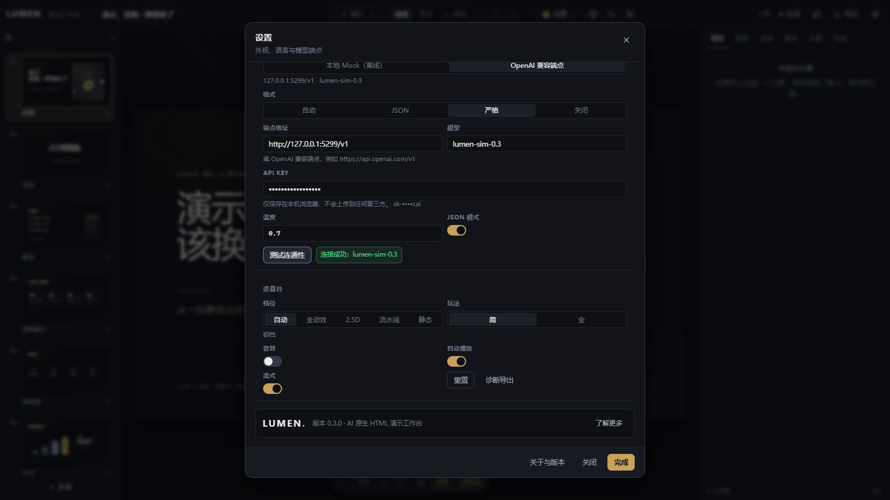
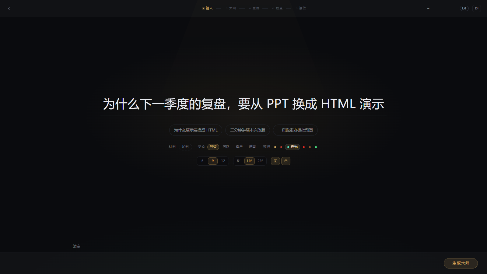
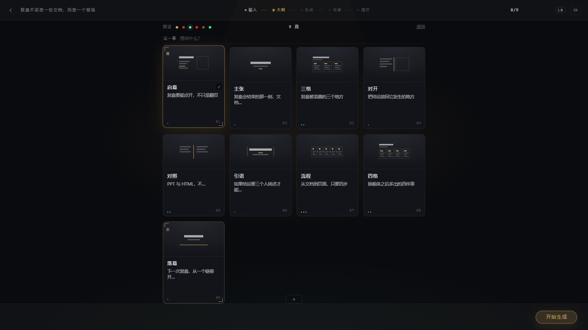
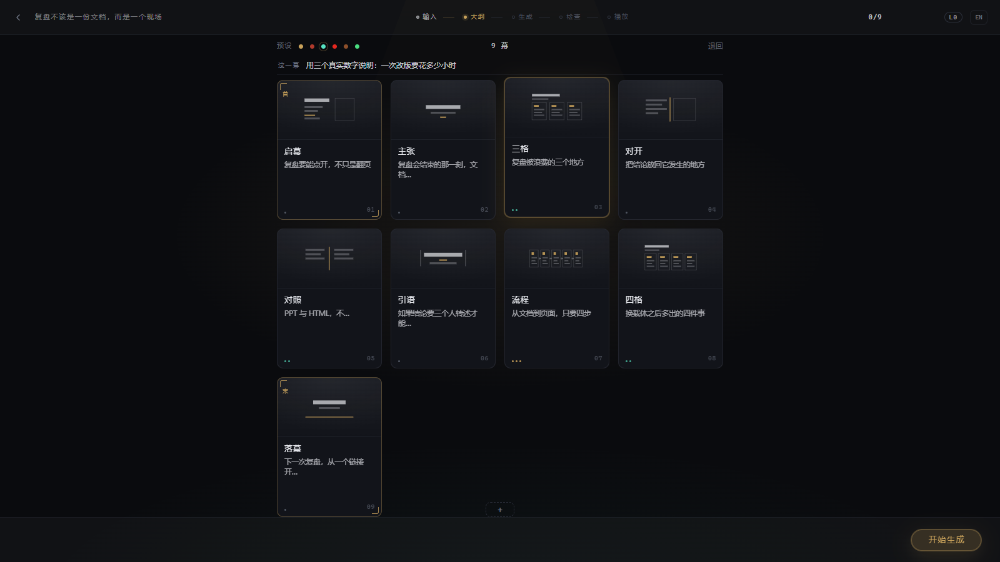
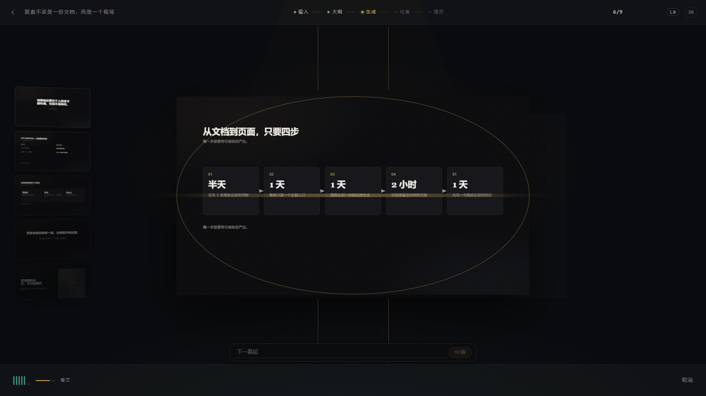
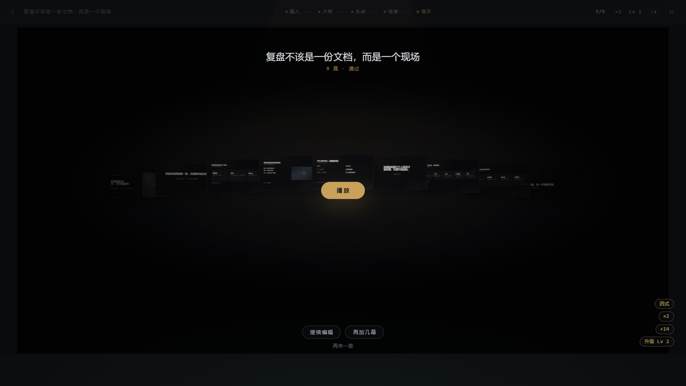
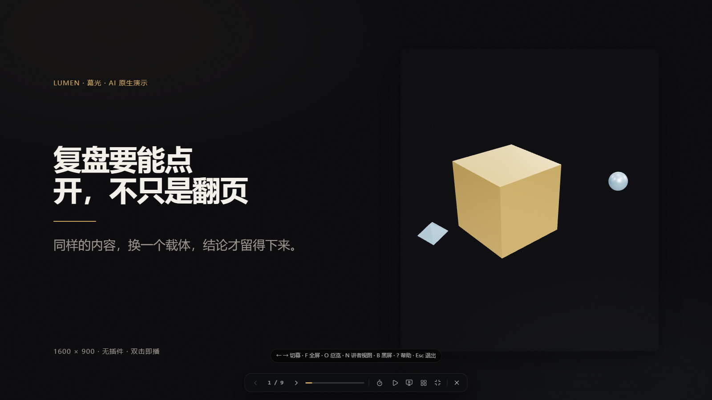
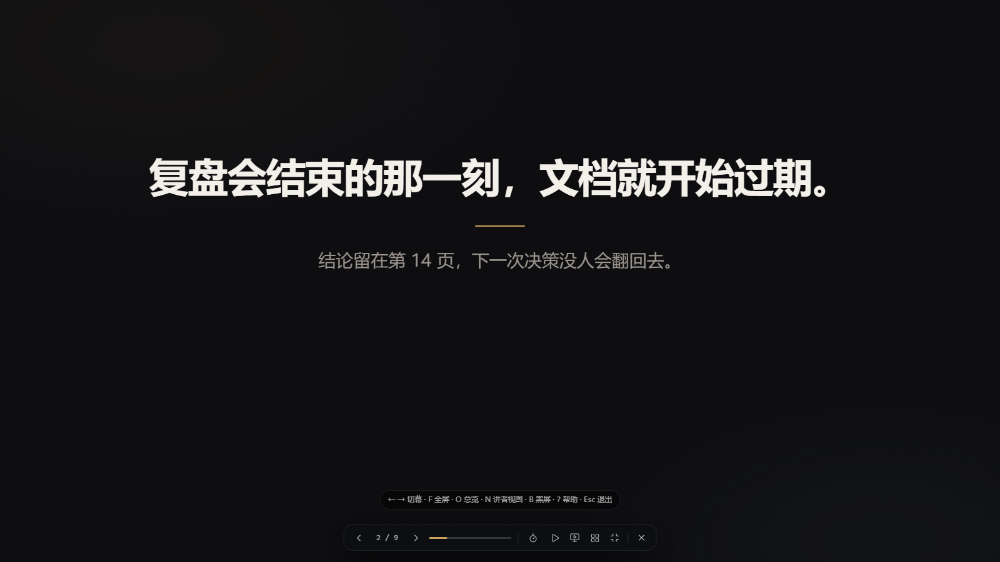
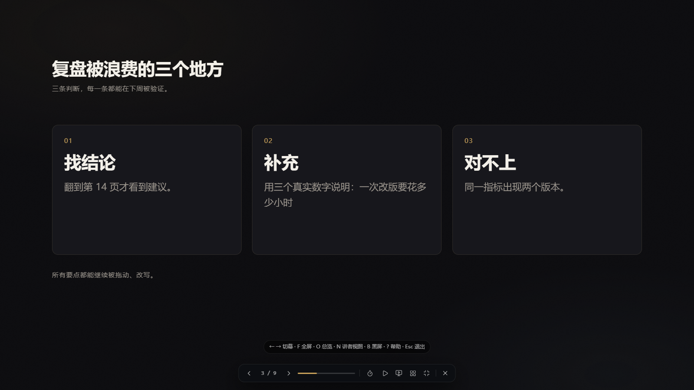
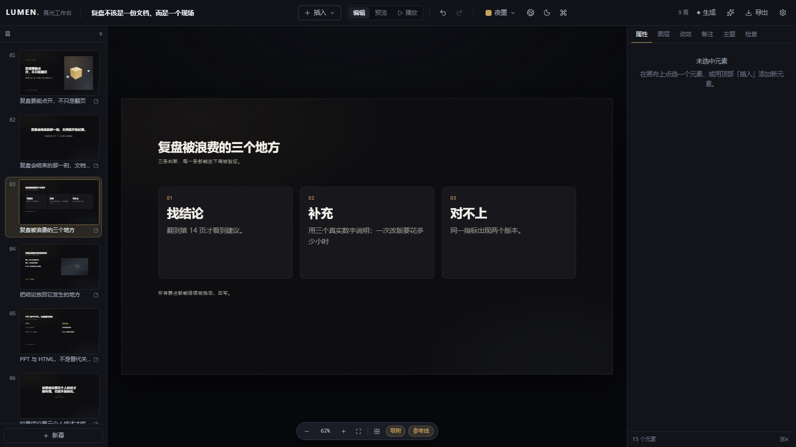
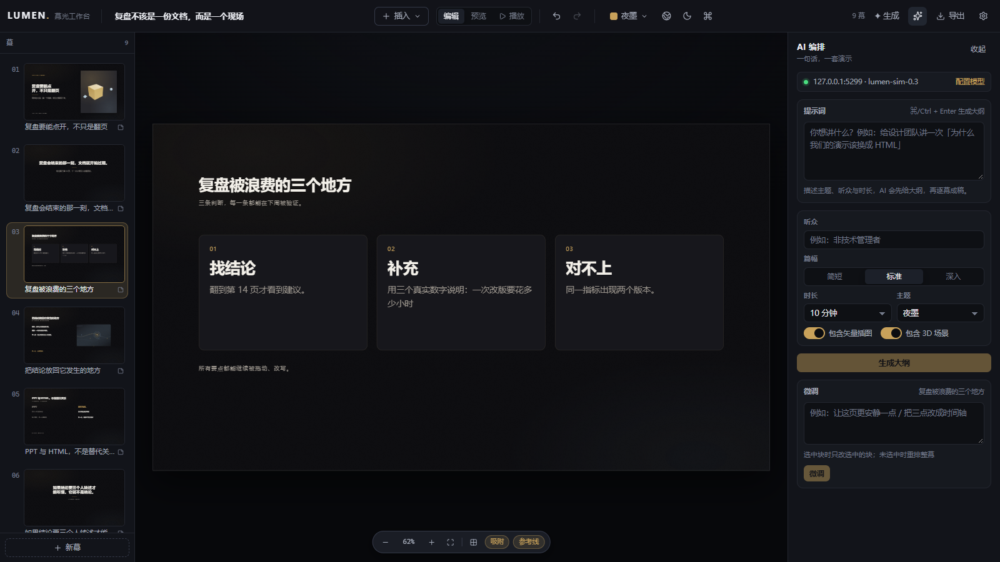
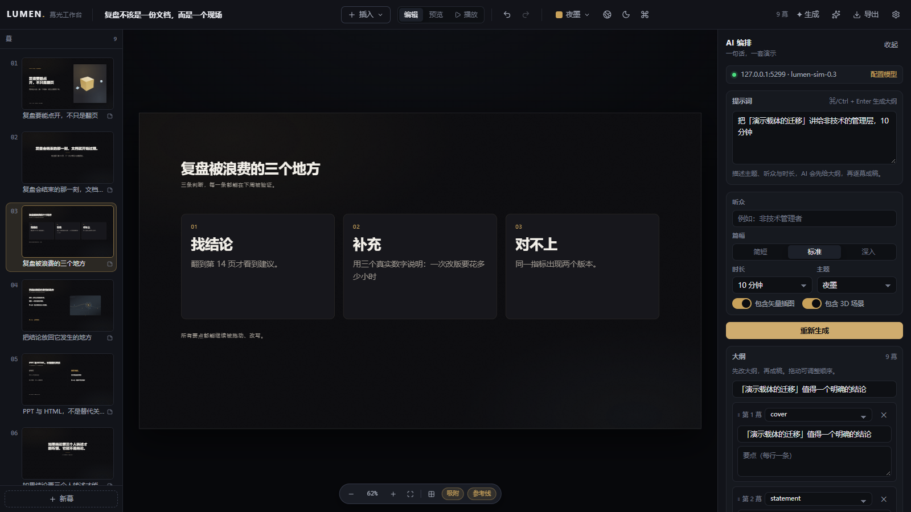
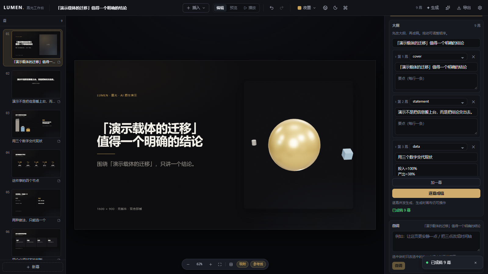
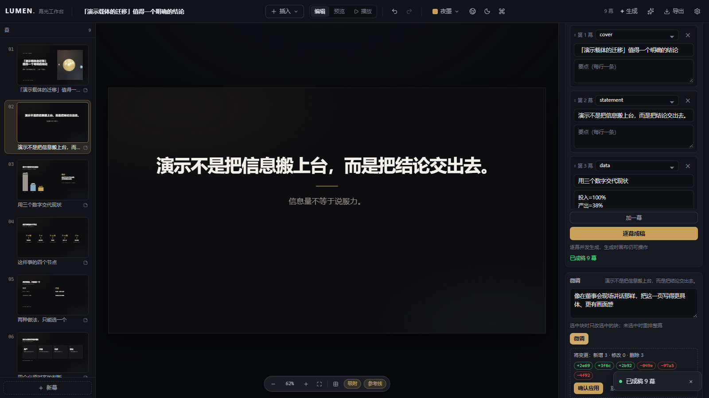
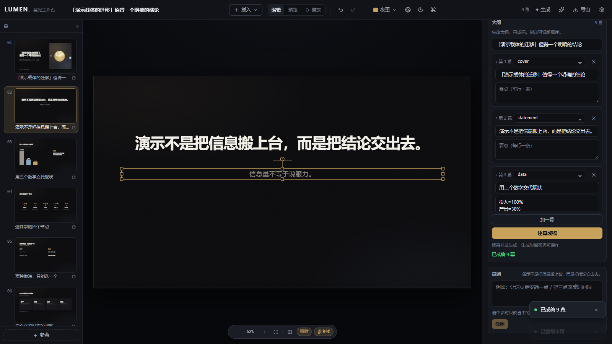
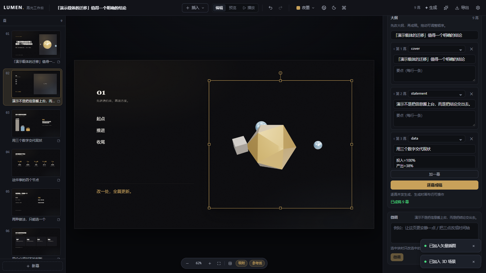
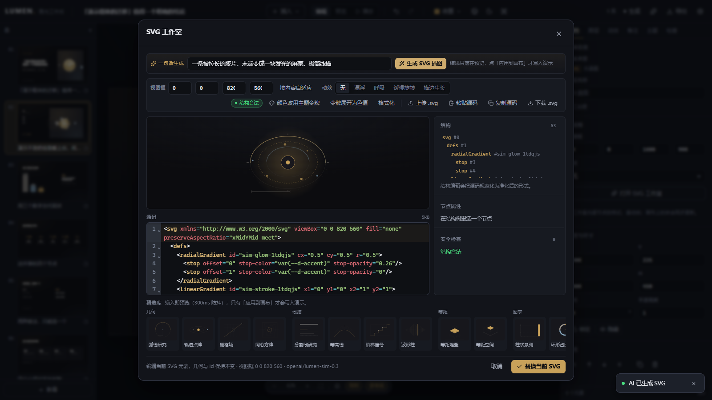
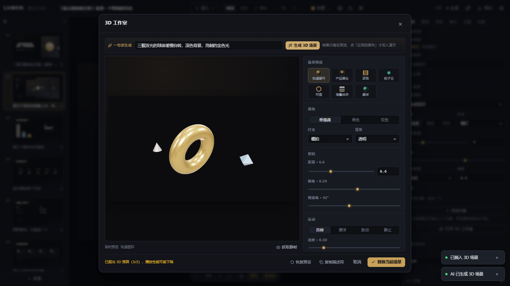


一个真实的 OpenAI 兼容端点（本地模拟）驱动了造幕台、AI 编排、微调、SVG/3D 工作室与三条鲁棒性路径。
| task | 次数 |
|---|---|
| outline | 8 |
| slide | 18 |
| three | 4 |
| svg | 3 |
| refine | 1 |
connect 设置：通道切到模拟端点并测试连通性 2426ms{"endpoint":"http://127.0.0.1:5299/v1","model":"lumen-sim-0.3"}forge.outline 造幕台：一句话 → 9 幕可编辑大纲 2066ms{"cards":9}forge.brief 造幕台：逐幕「这一幕想讲什么」进入生成请求 93ms{"brief":"用三个真实数字说明：一次改版要花多少小时"}forge.cast 造幕台：九幕成稿（文案 + SVG + 3D + 过检） 3408ms{"count":9}forge.play 造幕台：开演 → 全屏播放真实成稿 3000ms{}forge.persist 造幕台：成稿落库、AI 溯源、SVG/3D 块齐全 717ms{"slides":9,"types":["text","shape","three","svg"],"providers":["openai"]}composer.open AI 编排：从顶栏打开精密模式，通道徽标为真端点 188ms{"channel":"127.0.0.1:5299 · lumen-sim-0.3"}composer.outline AI 编排：提示词 → 可编辑大纲 1878ms{}composer.build AI 编排：逐幕成稿写回当前演示 2330ms{"slides":9,"title":"「演示载体的迁移」值得一个明确的结论"}refine.llm 自然语言微调：规则未命中 → 模型改写 + diff 预览 915ms{"preview":"将变更：新增 3 · 修改 0 · 删除 3"}refine.rules 自然语言微调：规则通道（时间轴）离线重排 + 应用 65ms{}refine.art 自然语言微调：加配图 / 加 3D 走单点生成 4944ms{"results":["将变更：新增 8 · 修改 0 · 删除 15","将变更：新增 8 · 修改 0 · 删除 8"]}studio.svg SVG 工作室：一句话 → 可净化 SVG → 替换当前块 6742ms{"source":"generateSvgArt"}studio.three 3D 工作室：一句话 → 受限场景描述符 → 替换当前块 3579ms{"source":"generateThreeScene"}robust.badjson 鲁棒性：截断 JSON → 修复/重试后仍出大纲 3833ms{"cards":9}robust.429 鲁棒性：429 → Retry-After 退避重试后成功 3848ms{"cards":9}robust.streambreak 鲁棒性：SSE 断流 → 同 body 非流式回退 2057ms{"cards":9}robust.restore 收尾：把模型名恢复为模拟主模型 1403ms{}console.clean 浏览器干净度：无预期外 console error / page error / 失败请求 0ms{"console":{"raw":3,"expected":2},"requests":{"raw":1,"expected":1}}
















